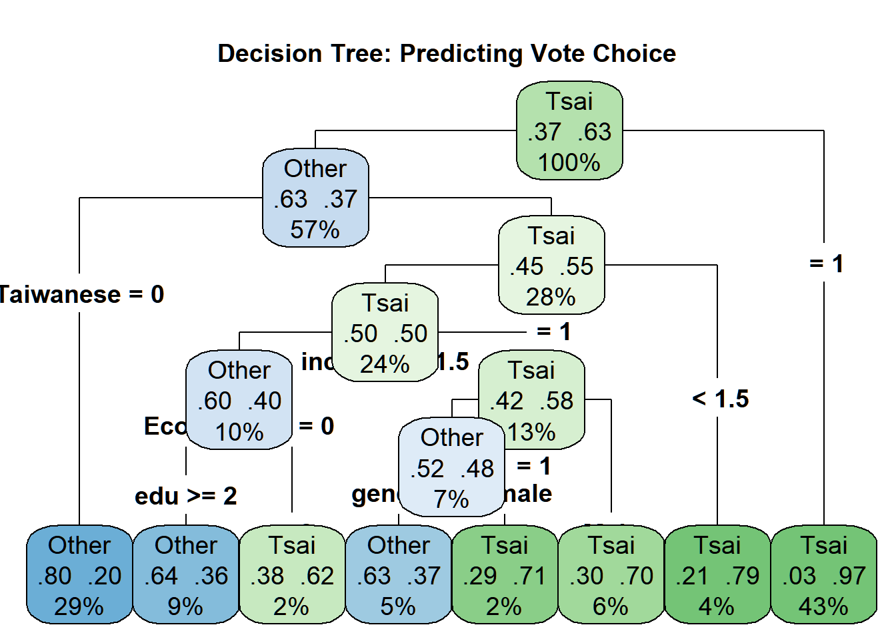

# Run the full lab script.
lab_file <- if (file.exists("Lab_ML01.R")) {
"Lab_ML01.R"
} else {
"assignments/Lab_ML01.R"
}
source(lab_file)Rows: 1,257
Columns: 10
$ vote <fct> Tsai, Other, Tsai, Tsai, Tsai, Tsai, Tsai, Tsai, Other, Oth…
$ gender <fct> Female, Male, Female, Male, Female, Female, Male, Female, F…
$ age <dbl> 39, 63, 64, 75, 54, 64, 66, 25, 41, 57, 83, 43, 44, 34, 28,…
$ edu <dbl> 5, 5, 2, 1, 5, 1, 1, 2, 5, 5, 1, 5, 5, 3, 3, 3, 3, 1, 5, 3,…
$ income <dbl> 7.0, 8.0, 9.0, 1.0, 10.0, 2.0, 3.0, 5.5, 9.0, 1.0, 5.5, 5.0…
$ Taiwanese <dbl> 0, 0, 1, 0, 1, 1, 1, 1, 1, 0, 0, 1, 1, 1, 0, 0, 0, 0, 0, 1,…
$ Econ_worse <dbl> 0, 1, 1, 1, 1, 1, 1, 0, 0, 1, 0, 1, 1, 0, 0, 0, 1, 0, 1, 0,…
$ Tondu <fct> 5, 3, 4, 9, 6, 9, 5, 5, 5, 4, 9, 3, 5, 3, 3, 4, 1, 1, 4, 3,…
$ Party <fct> 25, 3, 6, 25, 24, 25, 6, 5, 3, 3, 25, 23, 7, 3, 25, 2, 10, …
$ DPP <dbl> 0, 0, 1, 0, 0, 0, 1, 1, 0, 0, 0, 0, 1, 0, 0, 0, 0, 0, 0, 1,…
Training set: 880 observations
Test set: 377 observations
Call:
randomForest(formula = vote ~ age + gender + edu + income + Taiwanese + Econ_worse + DPP, data = train_data, ntree = 500, importance = TRUE)
Type of random forest: classification
Number of trees: 500
No. of variables tried at each split: 2
OOB estimate of error rate: 19.77%
Confusion matrix:
Other Tsai class.error
Other 245 84 0.2553191
Tsai 90 461 0.1633394